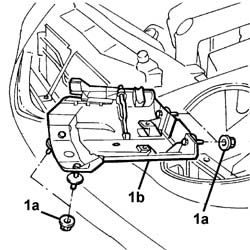
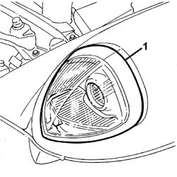
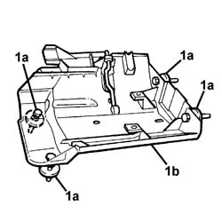

5540B87 Right headlamp support - R.R. with headlamp removed
- Path
- Procedures > 55 ELECTRICAL EQUIPMENT > 5540 EXTERIOR LIGHTING > 5540B HEADLAMPS > 5540B87 Right headlamp support - R.R. with headlamp removed
- Kind
- repair procedure (removal / refitting; the operation number is the code)
- Applies to
- all engines; all production periods
- Interactive page
- https://sloeber94.github.io/elrnDB-lThss/en/#/148513
Applies to: all engines; all production periods
 Removing
Removing
 Refitting
Refitting- Position the vehicle on a lift.
- Disconnect the negative battery terminal.
See in Op. 7055B54 PROTECTION/GUARD under engine - R.R.
- Move the right front wheel arch aside as necessary.
1. Undo the fixing nuts (1a) and remove the headlamp support (1b) from the housing.

Applies to: all engines; all production periods
Refitting
Removing- Fit the headlamp support in the housing and tighten the fixing nuts.
1. Fit the headlamp in the housing and visually inspect for any irregularities in the light between the actual headlamp and the housing in the wing.

Applies to: all engines; all production periods
- If the position of the headlamp is being adjusted, carry out the operations described below.
- Remove the headlamp from the housing.
1. Carry out the adjustment using the headlamp support (1b) devices (1a).

Applies to: all engines; all production periods
- When the adjustment is completed, reposition the front wheel arch.
See in Op. 7055B54 PROTECTION/GUARD under engine - R.R.
- Connect the negative battery terminal.
- Remove the vehicle from the lift.